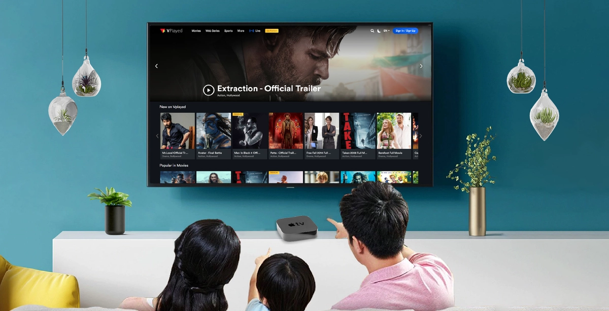
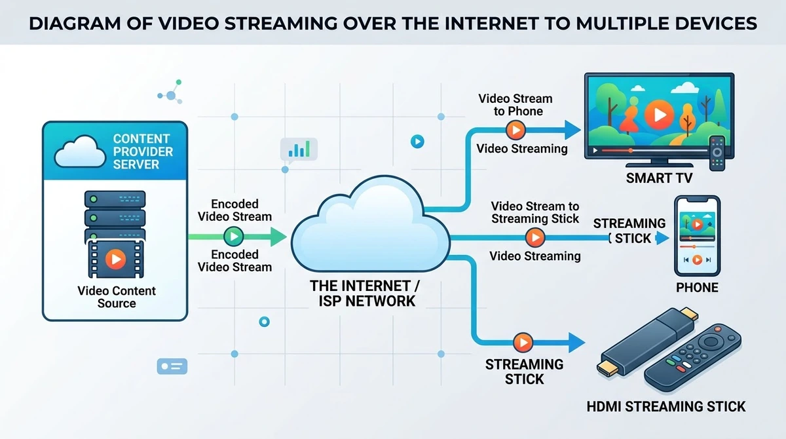
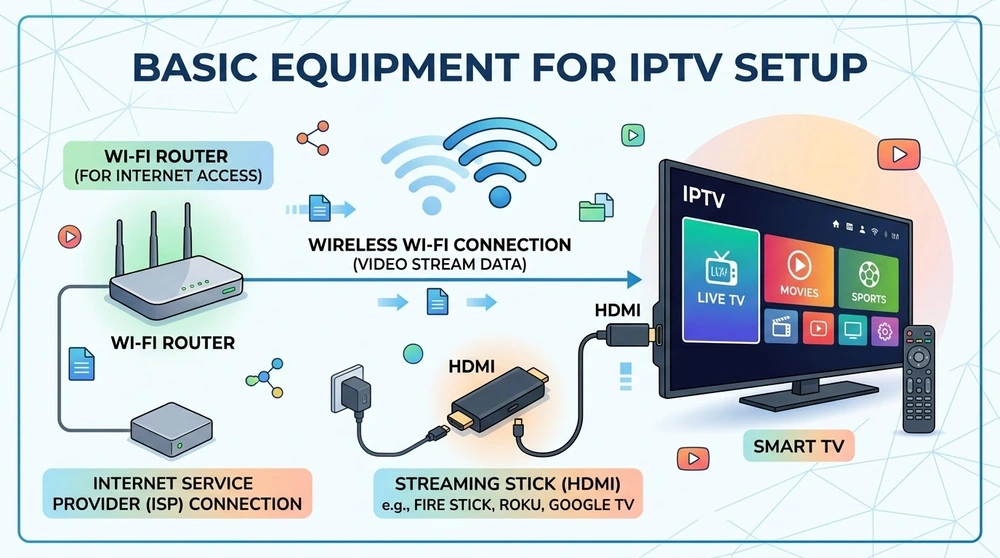
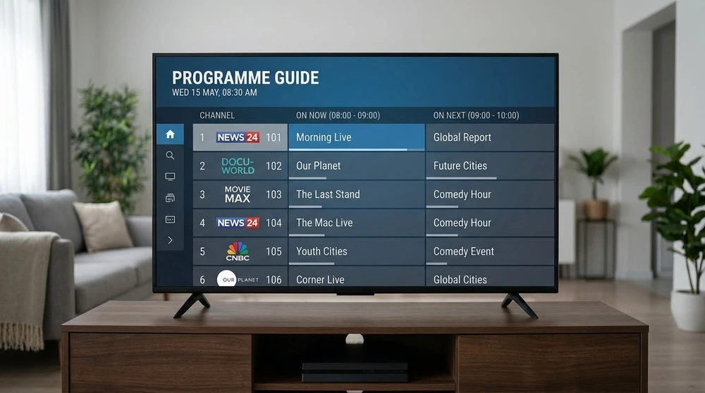

What Is IPTV and How Does It Work?

IPTV stands for Internet Protocol Television. Instead of arriving through an aerial, satellite dish or cable, the channels reach your screen as data over your internet connection. This guide explains the idea in simple terms, what you need to start and what to check before you commit to any service.
How IPTV works
A provider collects live channels and on-demand video, converts them into digital streams and sends them over the internet. An app on your device receives each stream, decodes it and shows it on screen. Because it is ordinary internet traffic, the same service can reach a phone, a Smart TV or a streaming stick.
Live TV, video on demand and catch-up
Most IPTV services combine three things: live channels, a library of films and series you can start any time, and catch-up for programmes that already aired. A built-in programme guide (EPG) lists what is on now and next.

What you need to get started
- A stable internet connection (see our internet speed guide).
- A compatible device such as a Firestick, Android TV box or Smart TV.
- A player app that can open IPTV sources.
- Access details from a provider, usually an M3U playlist link or a username and password.

How the content reaches your app
Providers normally hand you one of three things: a playlist URL, a login for an Xtream-style API, or a portal address. Players such as IPTV Smarters and TiviMate accept the first two.

Is IPTV legal?
The technology is legal and widely used by telecom companies and broadcasters. Whether a particular service is lawful depends on whether it holds the rights to the channels it offers. Check what a provider says about its licensing, avoid anything that looks too good to be true and use sources you trust.
Benefits and limitations
IPTV is flexible and works on many devices, but quality depends on your connection and on the provider's servers. Plan for a wired connection where possible and expect occasional buffering if your network is crowded.
Frequently asked questions
Is IPTV the same as Netflix or YouTube?
Not exactly. Those are on-demand apps from one company. IPTV is a delivery method that usually includes live channels and is accessed through a player app.
Do I need a special box?
No. Many Smart TVs, phones and streaming sticks can run an IPTV player app. A dedicated box is optional.
Can IPTV work on slow internet?
It can at lower quality, but a stable connection matters more than a headline speed. See the speed guide for realistic numbers.